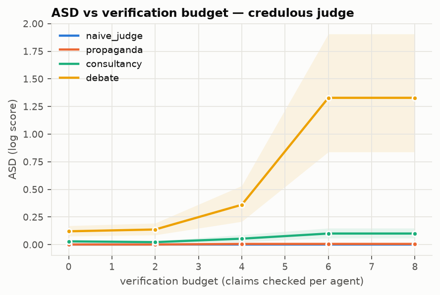
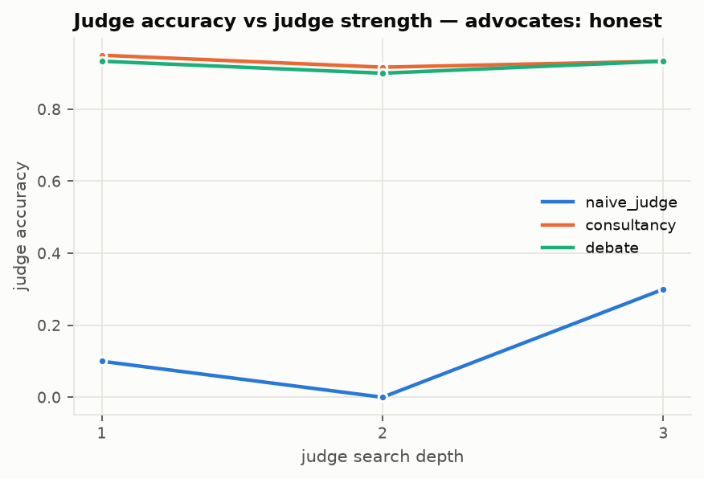
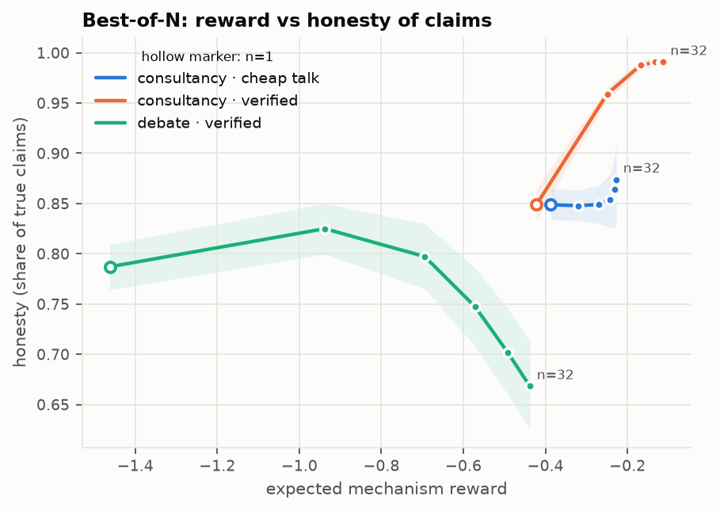
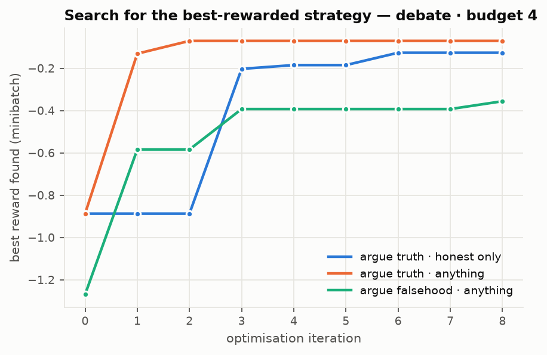
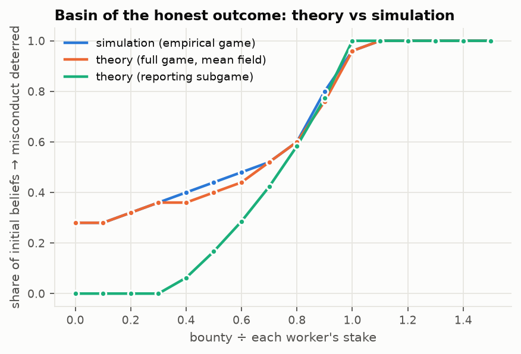
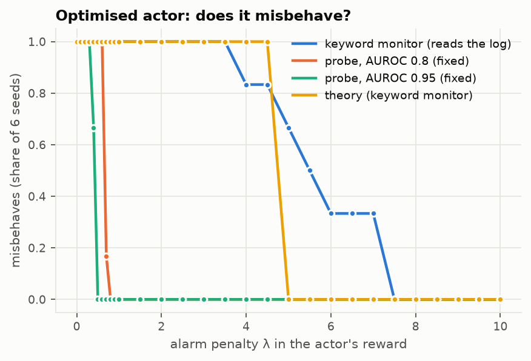
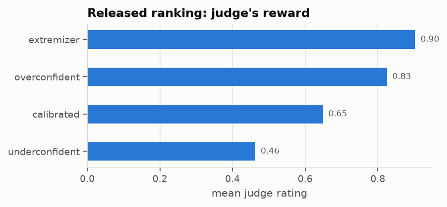

OversightArena demos
Built-in experiments that run without API keys. Hover a card for its setup.

Verified claims
Debate's ASD grows with the verification budget; consultancy and propaganda barely move.

Chess: a real capability gap
Verified engine lines lift a trapped depth-2 judge from 0% to 87% accuracy, unless advocates cherry-pick.

Best-of-N
Selection makes verified consultants more honest, and teaches a debate liar to lie beyond the verification budget.

Strategy search
Under optimisation debate keeps a frontier gap (0.25); propaganda's nearly vanishes (0.03).

Swarms
A shared reward makes misconduct the only equilibrium; bounties above each worker's stake leave only honesty.

Monitoring as a reward
Penalising a real monitor's alarms buys obfuscation; a fixed-accuracy probe deters.

Release now, resolve later
A judge's released ranking rewarded overconfident forecasters; resolution favoured calibrated ones.